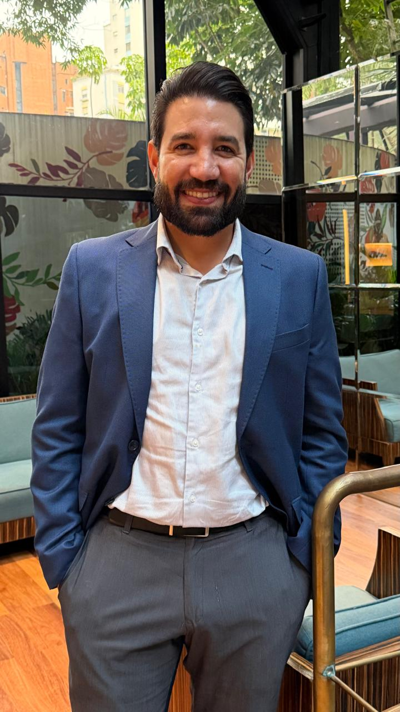

O futuro das agências não será definido apenas pelo preço.
O valor do agente está mudando. Atendimento, curadoria, repertório e relacionamento ganham novas dimensões em um mercado cada vez mais digital.
Continuar conversa →Um olhar de dentro sobre turismo, negócios, pessoas e as ideias que podem transformar o próximo capítulo do mercado de viagens.

Depois de mais de duas décadas trabalhando no turismo, aprendi que os melhores insights raramente estão apenas nos relatórios. Eles aparecem nas conversas, nos bastidores, nas viagens, nos hotéis, nas agências e nas decisões que ninguém vê.
Este espaço nasceu para compartilhar esse repertório — sem a formalidade de um currículo e sem a distância de um portal de notícias.
“Quero conversar sobre o que está acontecendo — e sobre o que pode acontecer.”
Não quero publicar apenas conteúdo. Quero registrar perguntas, aprendizados e sinais que podem provocar boas conversas no mercado.
O valor do agente está mudando. Atendimento, curadoria, repertório e relacionamento ganham novas dimensões em um mercado cada vez mais digital.
Continuar conversa →Uma população mais longeva está criando novas possibilidades de produto, relacionamento e experiência.
Quero conversar →Mais do que automatizar tarefas, a inteligência artificial pode mudar a forma como times comerciais tomam decisões.
Quero conversar →Ao longo da carreira, encontrei gente que mudou minha forma de enxergar turismo, negócios e liderança. Quero usar este espaço para compartilhar essas conversas.
Executivos, empreendedores, hoteleiros, agentes e profissionais que estão fazendo perguntas diferentes.
Ideias que surgiram em uma mesa de hotel, em uma feira, em um avião ou em uma reunião.
Porque networking, para mim, nunca foi acumular contatos. É criar relações que tenham significado.
Algumas ideias começam como uma conversa. Outras viram projetos. Aqui entram as iniciativas que estou explorando no universo de turismo e negócios.
Uma curadoria de lugares, tendências, pessoas e ideias que valem a atenção de quem vive o turismo.
Artigos, vídeos e bastidores sobre o mercado, comportamento, destinos e novas oportunidades.
Projetos, parcerias e experiências que conectam empresas, destinos, tecnologia e pessoas.
Um lugar, uma tendência, uma pessoa, uma ideia e uma oportunidade. Sem excesso de informação. Só aquilo que eu realmente gostaria de compartilhar com alguém que admiro.
Quero receber a próximaGosto de provocar conversas que continuam depois. Turismo, liderança, vendas, inteligência artificial, comportamento e os novos caminhos do mercado.
Falar sobre uma palestraMais de 23 anos de mercado construindo operações, liderando equipes, desenvolvendo negócios e vivendo o trade turístico de perto.
Gerência de vendas regional e atuação comercial.
Direção comercial e estratégia de distribuição B2B.
Direção e liderança de unidade de negócios em um ciclo de reconstrução e crescimento.
Novos negócios, estratégia, conteúdo, conexões e projetos no turismo.